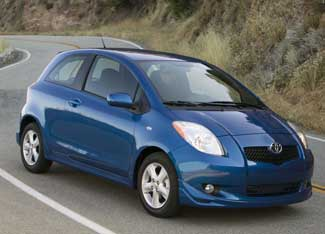

TOYOTA MOTOR CO.
Given impending increases to CAFE (corporate average fuel economy) standards, all cars will become more fuel-efficient, and there will be more superefficient models, such as the Toyota Yaris. The question is how high will regulators push the new CAFE benchmarks?